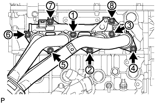

БЛОК ДВИГАТЕЛЯ > УСТАНОВКА |
| 1. УСТАНОВИТЕ ПРАВЫЙ КРОНШТЕЙН ПЕРЕДНЕЙ ОПОРЫ ДВИГАТЕЛЯ № 1 |
Установите кронштейн опоры двигателя и закрепите его 4 болтами.
| 2. УСТАНОВИТЕ ЛЕВЫЙ КРОНШТЕЙН ПЕРЕДНЕЙ ОПОРЫ ДВИГАТЕЛЯ № 1 |
Установите кронштейн опоры двигателя и закрепите его 4 болтами.
| 3. УСТАНОВИТЕ ПОДУШКУ ПЕРЕДНЕЙ ОПОРЫ ДВИГАТЕЛЯ |
Установите 2 подушки опоры и закрепите их 2 гайками.
| 4. УСТАНОВИТЕ ТРУБКУ ЩУПА ПРОВЕРКИ УРОВНЯ МАСЛА |
Закрепите трубку щупа проверки уровня масла болтом.
| 5. УСТАНОВИТЕ ПЕРЕПУСКНУЮ ТРУБКУ ОХЛАЖДАЮЩЕЙ ЖИДКОСТИ № 1 |
Закрепите перепускной патрубок охлаждающей жидкости с новой прокладкой с помощью 2 гаек.
| 6. УСТАНОВИТЕ ОПОРНЫЙ РОЛИК № 1 |
Установите распорную втулку и опорный ролик и закрепите их болтом.
| 7. УСТАНОВИТЕ КРОНШТЕЙН КОМПРЕССОРА № 1 |
 |
Временно установите кронштейн опоры и закрепите его 5 болтами.
| *1 | Болт B |
| *2 | Кронштейн опоры |
| *a | Отсутствие зазора |
Убедитесь, что между блоком цилиндров и кронштейном нет зазора, как показано на рисунке. Затем вверните болт, обозначенный B.
Затяните болты, обозначенные A и C.
| 8. УСТАНОВИТЕ ВПУСКНОЙ КОЛЛЕКТОР |
Подсоедините питающий шланг паров топлива № 2 к впускному коллектору.
Установите 2 кронштейна зажима жгута проводов на впускной коллектор и закрепите их 2 болтами.
 |
Установите на впускной коллектор новую прокладку.
Установите впускной коллектор и закрепите его 5 болтами и 2 гайками.
Для задней стороны двигателя:
Закрепите перепускной шланг охлаждающей жидкости № 2 и подсоедините шланг вентиляции № 3 к впускному коллектору.
Для передней стороны двигателя:
Закрепите 2 зажима жгута проводов на 2 кронштейнах зажимов жгута проводов.
| 9. УСТАНОВИТЕ ЭЛЕКТРОВАКУУМНЫЙ КЛАПАН ПРОДУВКИ |
Закрепите электровакуумный клапан продувки с помощью болта.
Подсоедините 2 шланга продувки к электровакуумному клапану продувки.
Подсоедините разъем электровакуумного клапана продувки.
| 10. УСТАНОВИТЕ ТОПЛИВНУЮ РАМПУ С ТОПЛИВНОЙ ФОРСУНКОЙ |
Установите топливную рампу с топливной форсункой (Нажмите здесь).
| 11. УСТАНОВИТЕ КОРПУС ДРОССЕЛЬНОЙ ЗАСЛОНКИ С ЭЛЕКТРОДВИГАТЕЛЕМ В СБОРЕ |
 |
Установите на впускной коллектор новую прокладку.
| *1 | Выступ |
| *2 | Канавка |
Установите корпус дроссельной заслонки с электродвигателем и закрепите его 2 болтами и 2 гайками.
Подсоедините перепускной шланг охлаждающей жидкости.
Подсоедините перепускной шланг охлаждающей жидкости № 2.
Подсоедините датчик положения дроссельной заслонки и разъем электродвигателя привода дроссельной заслонки.
| 12. УСТАНОВИТЕ ВЫПУКСНОЙ КОЛЛЕКТОР |
 |
Установите новую прокладку.
|  |
Установите выпускной коллектор и закрепите его 8 новыми гайками в последовательности, показанной на рисунке.
| 13. УСТАНОВИТЕ КЛАПАН ПЕРЕКЛЮЧЕНИЯ ПОДАЧИ ВОЗДУХА В СБОРЕ |
Установите теплозащитный экран выпускного коллектора № 1 на место.
Установите клапан переключения подачи воздуха и закрепите его 2 новыми гайками.
Подсоедините разъем.
| 14. УСТАНОВИТЕ ВПУСКНОЙ ПАТРУБОК № 4 |
 |
Установите впускной трубопровод № 4 с 2 новыми прокладками и закрепите его 4 новыми гайками в порядке, показанном на рисунке. Снова затяните гайки, обозначенные 1-3, до заданного крутящего момента.
Убедитесь, что гайки затянуты с требуемым крутящим моментом.
| 15. УСТАНОВИТЕ ТЕПЛОЗАЩИТНЫЙ ЭКРАН ВЫПУСКНОГО КОЛЛЕКТОРА № 1 |
Установите теплозащитный экран коллектора № 1 и закрепите его 5 болтами.
| 16. УСТАНОВИТЕ ГЕНЕРАТОР В СБОРЕ |
Для моделей с номинальным током 80 A:
Установите генератор (Нажмите здесь).
Для моделей с номинальным током 100 A:
Установите генератор (Нажмите здесь).
| 17. УСТАНОВИТЕ КАТУШКУ ЗАЖИГАНИЯ В СБОРЕ |
Установите 4 катушки зажигания и закрепите их 4 болтами.
Подсоедините разъемы 4 катушек зажигания.